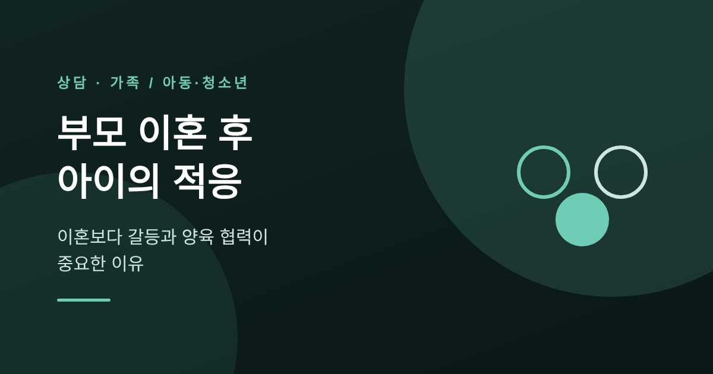
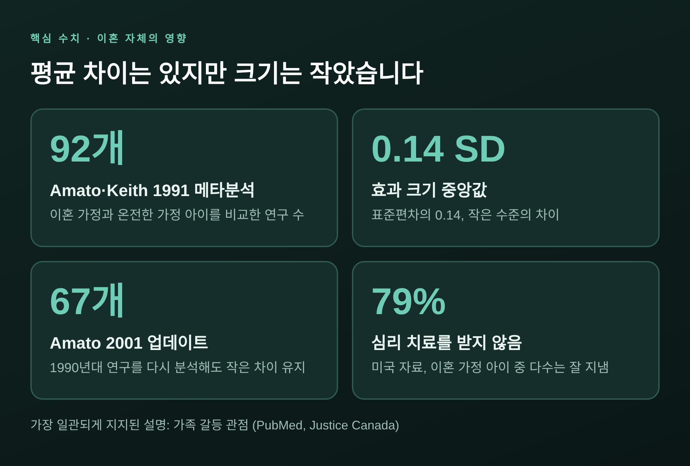
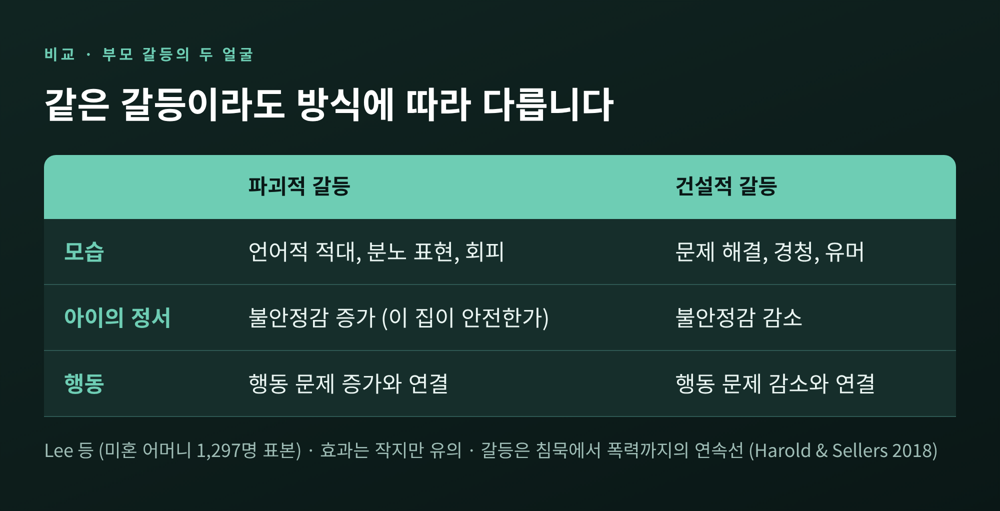
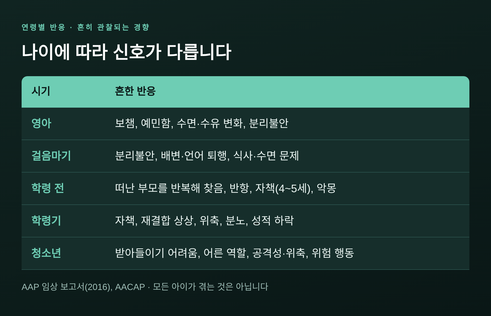
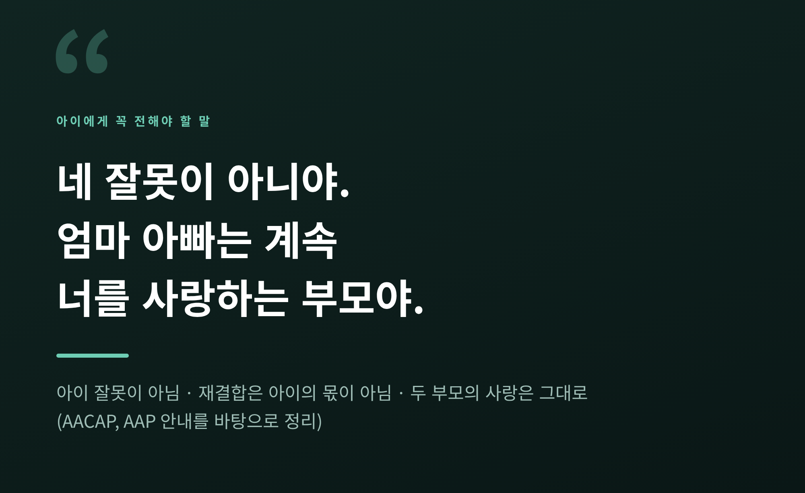
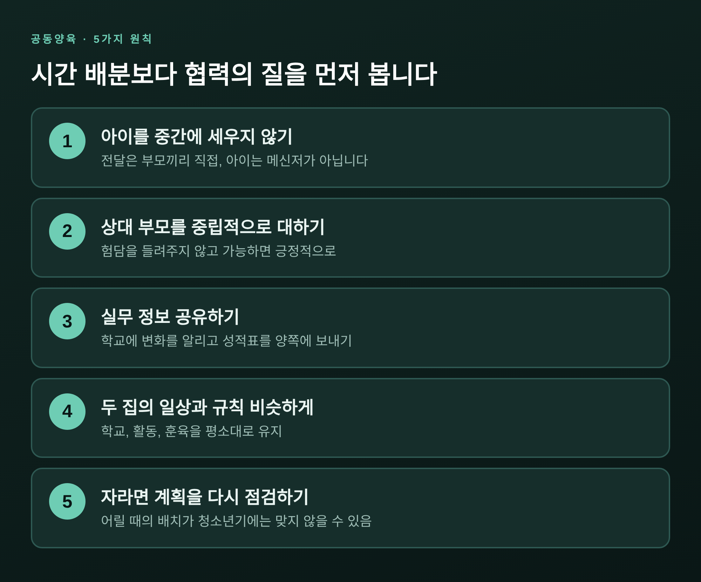

한 줄 요약: 연구들은 이혼 여부 그 자체보다 아이가 부모 갈등에 얼마나 노출되는지, 이혼 뒤 두 부모가 얼마나 협력하는지를 더 일관되게 짚습니다. 아이에게는 "네 잘못이 아니다, 두 부모 모두 변함없이 너를 사랑한다"는 메시지를 나이에 맞게 반복해 전하는 것이 중요합니다.
이번 글에서는 부모의 이혼 과정에서 아이가 어떻게 적응하는지 정리해 보려 합니다.
메타분석과 임상 보고서가 공통으로 가리키는 지점이 어디인지, 연령별로 아이가 어떤 반응을 보이는지, 어떻게 설명하고 어떻게 함께 키울지를 차례로 다룹니다.
이혼을 권하거나 말리려는 글이 아닙니다. 이미 그 길 위에 서 있는 부모님이 아이를 위해 무엇을 살필 수 있는지에 관한 글입니다.
예전에는 "이혼 가정의 아이는 문제가 생긴다"는 말이 상식처럼 통했습니다.
지금의 연구는 조금 더 조심스럽게 말합니다.
Amato와 Keith가 1991년에 발표한 메타분석은 92개 연구를 묶어 이혼 가정 아이와 온전한 가정 아이를 비교했습니다.
이혼 가정 아이의 점수가 여러 영역에서 낮기는 했습니다. 다만 효과 크기의 중앙값이 표준편차의 0.14로, 작은 수준이었습니다.
같은 연구를 요약한 캐나다 법무부 보고서에 따르면, 차이가 가장 컸던 영역은 아버지와의 관계(-.26)와 품행(-.23)이었습니다.
그 격차도 표준편차의 8분의 1에서 5분의 1 정도에 그쳤습니다.
Amato가 1990년대 연구 67개를 다시 분석한 2001년 업데이트에서도 학업 성취, 품행, 심리 적응, 자아개념, 사회적 관계에서 이혼 가정 아이가 여전히 다소 낮았습니다.
평균의 차이일 뿐, 모든 아이가 같은 길을 가는 것은 아닙니다.
미국 자료이기는 합니다만, 이혼 가정 아이의 79%는 심리 치료를 받지 않았고 대다수가 학업을 이어 갔다는 보고도 있습니다.

한 가지 짚어 둘 점이 있습니다.
같은 메타분석에서 이론 가운데 가장 일관되게 지지된 것은 '가족 갈등 관점'이었습니다.
아이를 흔드는 것은 가족의 형태보다, 그 안에서 오가는 갈등에 가깝다는 뜻입니다.
Amato는 20년 추적연구를 바탕으로 이렇게 정리했습니다.
만성적이고 공개적인 적대가 이어지는 고갈등 결혼에서는 부모가 헤어지는 편이 아이에게 장기적으로 낫습니다.
반대로 갈등이 낮은 결혼에서는 함께 사는 편이 낫고, 이혼이 오히려 아이를 더 취약하게 만드는 경향이 있습니다.
이혼의 다수는 저갈등 결혼에서 나왔고, 부모가 긍정적으로 받아들이는 변화를 아이는 예상치 못한 원치 않는 일로 겪는 경우가 많았습니다.
이는 평균적 경향입니다. 어느 가정에 어떤 선택이 맞는지를 알려 주는 처방이 아닙니다.
중요한 것은 갈등이 '있느냐'보다 '어떻게 표현되느냐'입니다.
Harold와 Sellers의 2018년 리뷰는 부모 갈등을 침묵에서 폭력까지 이어지는 연속선으로 봅니다.
부모가 갈등을 어떻게 드러내고 다루는지가 아이의 정서, 행동, 사회성, 학업, 이후의 대인관계에까지 영향을 준다고 정리합니다.
이 관계는 부모가 같이 살든 따로 살든, 혼인 여부와 무관하게 성립합니다.
아이가 파괴적 갈등을 볼 때 무엇이 일어나는지도 연구가 보여 줍니다.
미혼 어머니 1,297명을 분석한 Lee 연구진의 논문에서 언어적 적대, 분노 표현, 회피 같은 파괴적 갈등은 아이의 정서적 불안정감과 행동 문제 증가에 연결되었습니다.
문제 해결, 경청, 유머가 오가는 건설적 갈등은 그 반대 방향이었습니다. 효과는 작지만 유의했습니다.
두 갈등을 이어 주는 고리는 아이의 정서적 불안정감, 곧 '이 집이 안전한가'에 대한 의심이었습니다.

미국소아과학회(AAP) 보고서도 같은 맥락입니다.
갈등과 긴장은 별거 이전부터 아이의 행동 문제를 일으킬 수 있고, 아이가 부모 사이에 끼면 죄책감과 충성심의 갈등, 한쪽을 고르라는 압박을 느낍니다.
긴 법적 분쟁은 이후의 공동양육을 더 어렵게 만든다고도 짚습니다.
아이의 반응은 발달 단계에 따라 다릅니다. AAP 보고서의 정리를 따라가 보겠습니다.

영아와 걸음마기 아이는 말로 표현하지 못하는 대신 몸으로 보여 줍니다.
보채고 예민해지고, 수면과 수유가 흔들립니다. 익숙한 어린이집이나 조부모 집에서도 분리불안이 커지고 배변이나 언어에서 퇴행이 올 수 있습니다.
학령 전 아이는 떠난 부모를 반복해서 찾고, 부모마다 규칙이 다른지 시험해 봅니다.
4~5세쯤 되면 "내가 잘못해서 그렇다"는 자책과 악몽, 버려질지 모른다는 두려움이 나타날 수 있습니다.
학령기 아이는 자책과 함께 재결합을 상상하고, 위축되거나 화를 내며 성적이 떨어지기도 합니다.
집을 떠난 부모에게 버림받았다는 느낌도 흔합니다.
청소년은 이유를 이해해도 받아들이기는 어렵습니다.
어른의 역할을 떠안거나 재결합을 바라기도 하고, 공격성, 위축, 물질 사용, 위험 행동, 학업 저하로 드러나기도 합니다.
연령이 달라도 겹치는 지점이 있습니다.
미국 아동청소년정신의학회(AACAP)가 말하듯, 모든 연령의 아이가 자신이 갈등의 원인이라고 믿거나 부모를 다시 합칠 책임이 있다고 느낄 수 있습니다.
이 반응들은 흔히 관찰되는 경향일 뿐, 모든 아이가 겪는 것은 아닙니다.
메타분석에서는 품행 문제가 이혼 후 2년 이내에 더 두드러졌다는 결과도 있어서, 첫 두 해는 특히 세심하게 지켜볼 만합니다.
AACAP와 AAP의 안내는 놀랄 만큼 비슷합니다. 핵심만 추리면 다섯 가지입니다.
첫째, 일찍, 가능하면 함께 알립니다. 비밀로 하거나 마지막 순간까지 미루지 않습니다.
둘째, 단순하게 설명합니다. 아이의 나이에 맞춰, 아이가 묻는 만큼만 답합니다. 무슨 일이 일어나는지, 아이의 생활이 어떻게 달라지는지를 구체적으로 알려 줍니다.
셋째, 아이의 잘못이 아니며 부모를 다시 합칠 수도 없다고 분명히 말합니다.
넷째, 두 부모 모두 변함없이 사랑하고 계속 부모라고 확인해 줍니다.
다섯째, 감정 표현을 허용합니다. 슬프고 화나는 것이 자연스럽다고 인정해 줍니다.

피해야 할 것도 분명합니다.
AACAP는 "서로의 흠이나 문제를 아이와 논의하지 말라"고 권합니다.
아이를 메신저로 쓰지 않고, 정서적 의지의 대상으로 삼지 않으며, 가족의 결정을 아이에게 맡기지 않습니다.
학교, 활동, 친구, 가족과의 만남, 훈육 같은 일상은 가능한 한 평소대로 유지하는 편이 좋습니다.
설명은 한 번의 대화로 끝나지 않습니다.
어린아이일수록 같은 질문을 되풀이하고, 청소년은 한참 뒤에 불쑥 속마음을 꺼냅니다.
같은 말을 같은 온도로 다시 해 주는 일이 생각보다 큰 안정감을 줍니다.
양육 협력이 중요하다는 데에는 이견이 적습니다.
논쟁이 있는 것은 '시간을 어떻게 나눌 것인가'입니다.
Nielsen은 8개국 60개 연구를 검토해, 공동 신체 양육을 한 아이들이 대체로 단독 양육 아이만큼 혹은 그보다 나았다고 보고했습니다.
갈등을 통계적으로 통제한 19개 연구 중 16개에서도 결과가 같았습니다.
다만 같은 검토에는 예외도 있습니다. 고갈등 속에서 한쪽 부모와의 관계가 나쁜 청소년, 별거 8년 뒤에도 갈등이 높은 십대 딸 등이 그렇습니다.
Braver와 Votruba의 2018년 리뷰는 더 신중합니다.
공동 양육을 택한 가족은 이혼 전부터 다른 집단일 수 있어서(자기선택), 이점이 일부 혹은 전부 그 차이일 가능성이 있다고 인정합니다.
엄격한 설계를 검토한 끝에 "아마 이점이 있을 것"이라고 결론짓되, 합의 없이 강제된 경우의 증거는 부족하고 모든 사례에 맞지는 않을 수 있다고 덧붙입니다.
AAP는 양육권의 형태보다 각 부모의 양육의 질이 아이의 적응에 더 중요하다고 말합니다.
그래서 '반반으로 나누는가'보다 '두 집이 협력하는가'를 묻는 편이 맞습니다.
연구와 안내를 모아 보면 다음과 같은 원칙이 보입니다.

폭력이나 안전의 문제가 있는 경우에는 이야기가 달라집니다.
그때는 접촉의 방식 자체를 전문가, 법률 조력자와 먼저 상의하셔야 합니다.
AACAP는 아이에게 행동, 성적, 기분의 변화가 오래 이어지면 소아과나 가정의를 거쳐 아동청소년 정신건강 전문가를 찾으라고 안내합니다.
아이만이 아니라 부모도 함께 상담을 받는 편이 좋습니다. 한쪽 부모를 아이가 거부하는 경우에도 도움을 받아야 합니다.
국내에도 문을 두드릴 곳이 있습니다.
전국 가족센터(건강가정지원센터, 대표번호 1577-9337)는 부모교육과 가족 갈등 예방·해결 프로그램을 운영합니다.
만 9~24세 청소년이라면 청소년상담복지센터(지역번호+1388)에서 가족 문제를 포함한 상담을 받을 수 있습니다.
이혼 절차 중에 있다면 법원이 안내하는 부모교육이 있는지도 확인해 보시기 바랍니다.
운영 방식과 비용은 기관마다 다르니 문의해 확인하시길 권합니다.
이 글은 일반적인 연구 정보를 정리한 것이며 진단이나 치료를 대신하지 않습니다.
아이의 상태가 걱정되거나 갈등이 깊어졌다면, 아동·가족 상담 전문가나 상담기관과 꼭 상의하시기 바랍니다.
정리하면 이렇습니다.
연구들이 반복해서 가리키는 것은 하나입니다.
아이의 적응을 좌우하는 것은 이혼이라는 사건보다 이후에도 이어지는 갈등의 노출, 그리고 두 부모가 아이를 위해 협력하는 정도입니다.
"아이가 안전하다고 느끼게 하는 것, 그것이 부모가 할 수 있는 가장 큰 일입니다."
완벽한 부모가 되지 못해도 괜찮습니다. 다만 오늘 아이 앞에서 한 번 목소리를 낮추는 일은 지금 당장 시작할 수 있습니다.